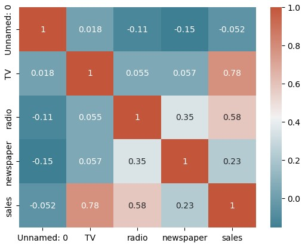
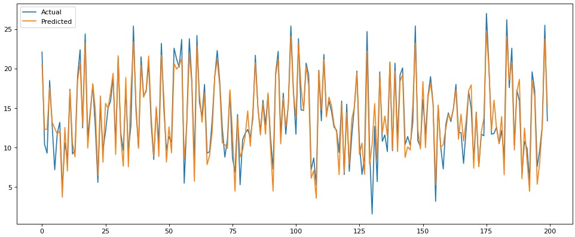

MAXIMIZING SALES AND REVENUE
WITH MARKET MIX MODELING
The ultimate goal in any companies is to increase sales and revenue. Most of the organizations are investing a considerable amount of money into advertising across various channels, including television, radio, and newspaper. Since we can see positive results, we cannot make sure that which of these channels are contributing the most to sales. This is where market mix modeling comes in.
By using advanced statistical techniques, we can determine the impact of each advertising channel on our sales and identify which channels are most effective at driving results. This will help organizations to optimize advertising spend, by reallocating resources from less effective channels to the ones that have a higher impact on our sales. Market mix modeling will also help us better understand consumer behavior and preferences, allowing us to tailor our advertising campaigns and product offerings to better meet their needs. By doing so, we can increase brand awareness and loyalty, further driving sales and revenue. Ultimately, market mix modeling is a proven method for maximizing ROI and driving business growth.
Here I will build a market mix model in Python using advertising dataset from Kaggle. After this analysis I can give more informed decisions about advertising strategy and achieve our goal of increasing sales and revenue.
Explaratory Data Analysis
 I used correlation matrix, pair plot and feature importance to find the relationship between different advertising channels and sales. Among these channels TV has more positive correlation of 0.78 followed by radio. From this analyis we get a better undestanding of factors that are strongly related to make our prediction more accurate. Pair plots helps to look at lots of data all at once. It shows how each measurement is related to every other measurement, so we can see patterns and relationships between them.
Market Mix Modeling
 This OLS Regression Results shows the relationship between sales and different advertising channels (TV, radio, and newspaper) using a market mix model. The R-squared value of 0.897 indicates that the model explains 89.7% of the variation in sales. The coefficients of the model suggest that TV and radio advertising have a positive impact on sales, while newspaper advertising has a negative impact. Specifically, a one-unit increase in TV advertising spending is associated with a 0.0458 increase in sales, and a one-unit increase in radio advertising spending is associated with a 0.1885 increase in sales.
On the other hand, a one-unit increase in newspaper advertising spending is associated with a negligible change in sales, which is not statistically significant. The p-values for TV and radio advertising are both less than 0.001, which means that the coefficients for these variables are statistically significant at the 0.001 level. This suggests that the relationship between these variables and sales is not likely to be due to chance, but rather a true relationship exists. However, the p-value for newspaper advertising is 0.860, which is greater than the common threshold of 0.05. This indicates that the coefficient for newspaper advertising is not statistically significant, and the relationship between newspaper advertising and sales may not be meaningful.
In conclusion, this market mix model suggests that companies should invest more in TV and radio advertising to increase sales, while decreasing or eliminating their investment in newspaper advertising.